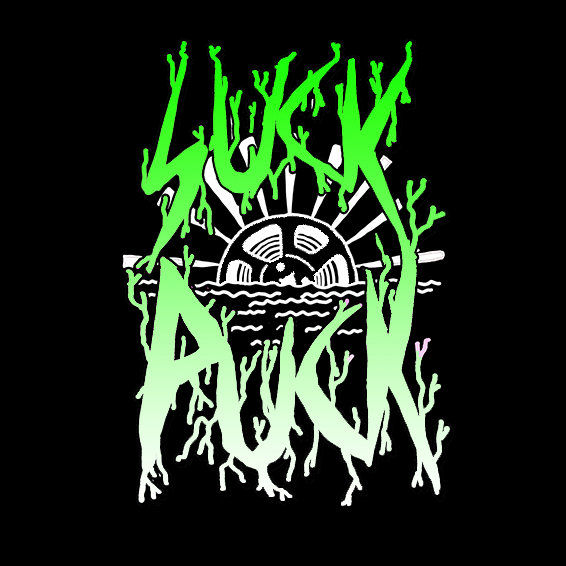
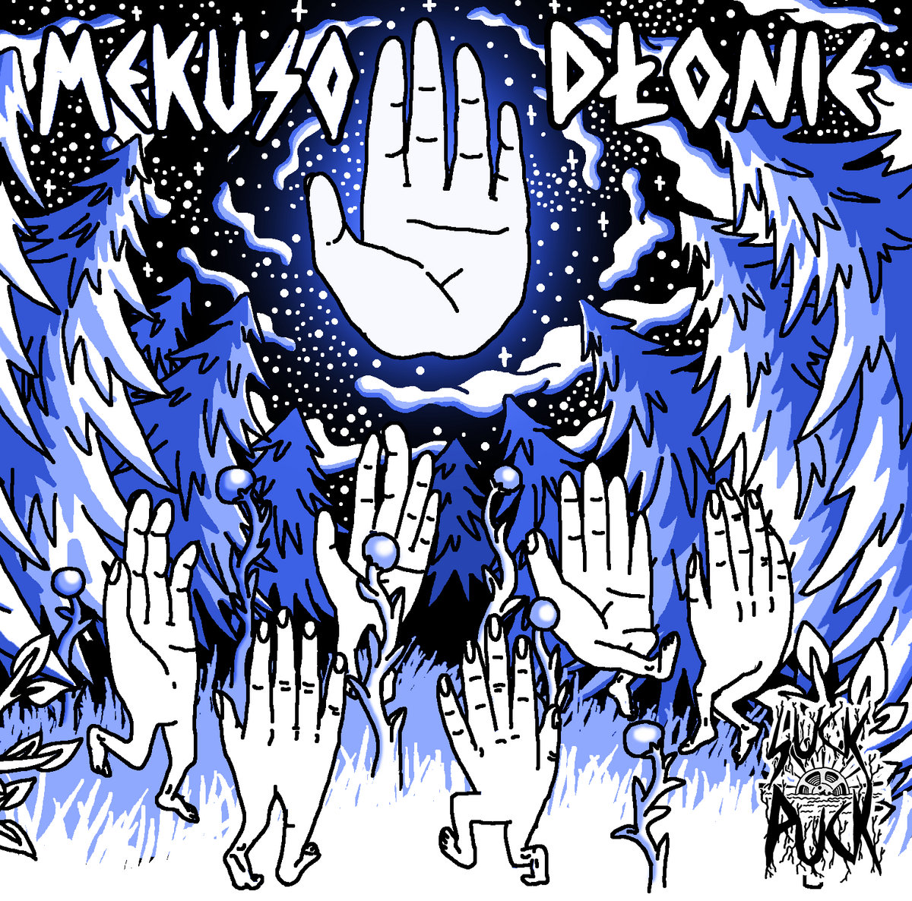
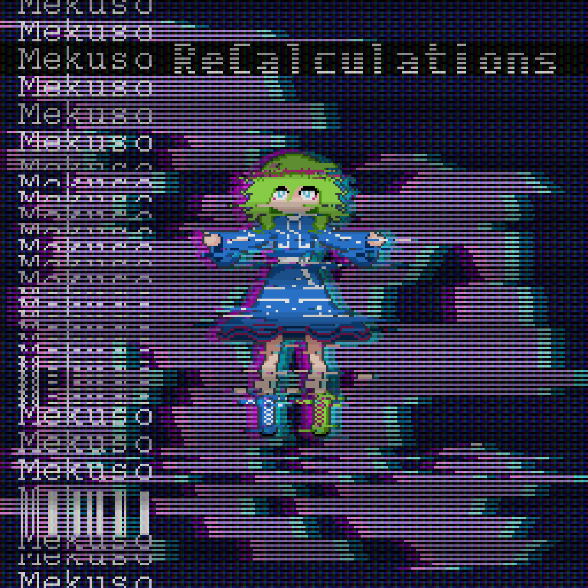
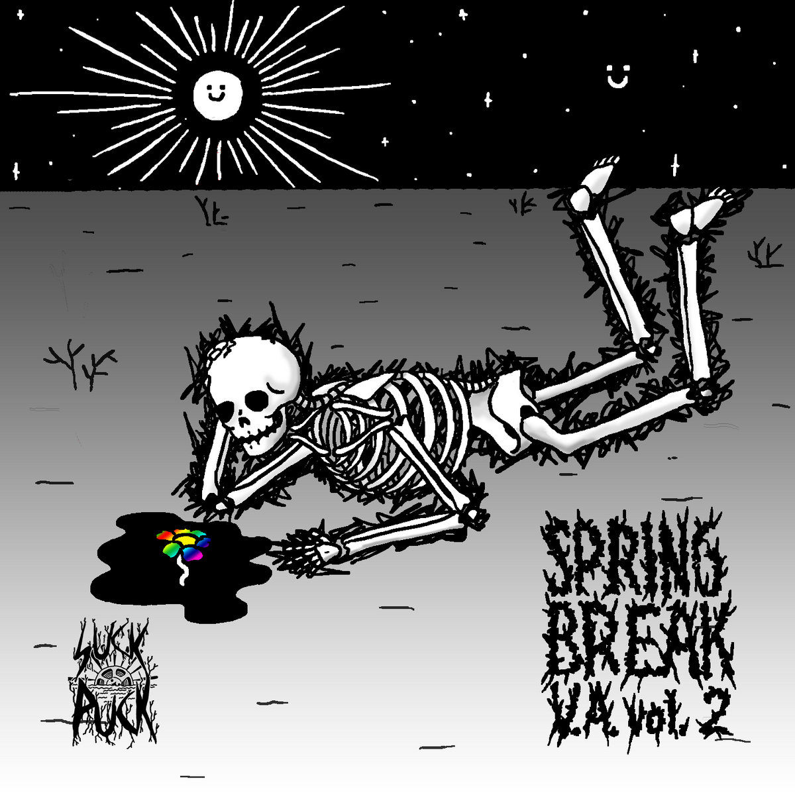
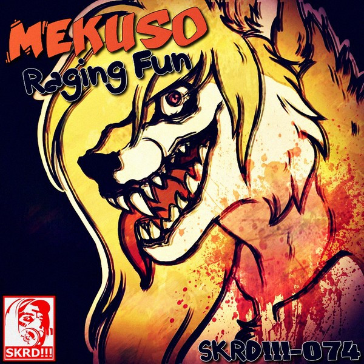

| Main | Breakcore | Inspiration | My Music | Audio Services | Contacts |
I've been producing (I like to call that writing) music ever since 2015.
Before that I had some piano classes that I hope I'm making a good use out of them.
I focus on resonating my emotions through music hoping to help others through sound.
Sometimes I really just want to be funny.
 I've been working with Suck Puck Records for a few years now doing mastering services for them and releasing tracks on their compilations. It's been founded by Dima aka Fat Frumos, Ukrainian rave music producer and DJ who aspires to make a collective of all other ravers from across the globe, which I feel like he's already achieved a while ago. He's an experienced organizer of major underground events and is planning to go even further with merch quality and releases.
Here are some of my major releases:
|  |  |
Mekuso - Dłonie (Album, 2020, Suck Puck Records)"Dłonie" - Hands. Touch, intimate, sacred feelings. |
Mekuso - ReCalculations (Album, 2017, Otherman Records)A throwback to older concept of playing around with time signatures. |
|  |  |
Mekuso - Geno (Single, 2021, Suck Puck Records)Track released with 42 other ones as a special summer release. |
Mekuso - Raging Fun (EP, 2015, SKRD!!!)My first ever officially released music under a netlabel. |